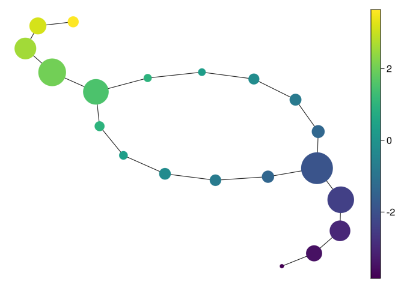

using TDAmapper;
import GeometricDatasets as gd;(Classical) mapper
Some theory
Reeb graph
In topology, there are many ways by which we try to see what can’t be seen, in particular high-dimensional sets. The Reeb graph is one of those ways: given a topological space \(X\) and a continuous function \(f: X \to \mathbb{R}\), we can collapse the connected components of its pre-images to get a graph that reflects the level-sets of \(f\).
More formally, we define a relation \(\sim\) on \(X\) such that \(p \sim q\) if-and-only-if \(p\) and \(q\) belong to the same connected component of \(f^{-1}(c)\) for some \(c \in \mathbb{R}\).

The (classical) mapper
The (classical) mapper is an algorithm to create graphs from metric spaces, and can be seen as an “statistical” version of the Reeb graph.
To be able to mimick the Reeb graph, we need to change some objects from the continuous setting to the discrete setting:
- \(X = (X, d)\) is now a finite metric space, also called a point cloud;
- \(f: X \to \mathbb{R}\) can be any function (since \(X\) is discrete, \(f\) is automatically continuous);
- instead of inverse images of points of \(\mathbb{R}\), we calculate inverse images of subsets of \(\mathbb{R}\) (usually intervals);
- instead of connected components (which are trivial in the discrete setting), we use some clustering algorithm (DBSCAN, single linkage, etc.) and consider these clusterings as “connected pieces of \(X\)”.
The mapper graph can shed light to the geometry of \(X\):
- nodes are clusters of points of \(X\);
- the color of the nodes can summarise some information about the points of \(X\) that represent this node;
- edges denote some proximity (in the metric of \(d\) of \(X\)) between the nodes.
To be more precise, to calculate the mapper of a metric space \(X\), we need the following ingredients:
- a function \(f: X \to \mathbb{R}\) that measures something interesting in \(X\), as, for example, the excentricity, the first coordinate of PCA, and so on;
- a covering \(C\) of the image \(f(X) \subset \mathbb{R}\);
- a method \(l\) to cluster each \(f^{-1}(c)\) for \(c \in C\).
When all of this is chosen, we have a covering of \(X\) by clustering each pre-image of the elements of \(C\), that is:
\[ V = \{ l(p); \; p = f^{-1}(c) \; \text{for} \; c \in C\} \]
We then calculate the 1-dimensional nerve of \(V\): we define the set of edges \(E \subset V \times V\) by
\[ (v_1, v_2) \in E \leftrightarrow v_1 \cap v_2 \neq \emptyset \]
In words, we have an edge between \(v_1\) and \(v_2\) if there is some point in both \(v_1\) and \(v_2\) at the same time.
Less theory, more Julia!
Let’s import some packages:
and define \(X\) as a torus with the usual Euclidean distance
X = gd.torus(2000)3×2000 Matrix{Float64}:
2.18226 3.54087 -0.879014 … 1.97537 0.852017 -2.4232
2.84043 0.221704 3.90208 -1.62571 -3.88278 0.85393
-0.813234 -0.836608 -0.0164606 -0.897172 -0.221497 0.902476Important: when using TDAmapper, your point cloud must be in column-major order. That is: each point of \(X\) must be a column of X, not a row (as is usual with dataframes). This is so because Distances.jl, NearestNeighbors.jl, Clustering.jl and many other packages for calculations with metric spaces use the column-major order for performance reasons.
We define the function \(f: X \to \mathbb{R}\) as the projection on the \(x\)-axis because our torus is laying down compared to the one in the Reeb graph example.
Let fv be a vector such that fv[i] is the \(x\)-axis projection of the point \(x_i\) of \(X\):
fv = X[1, :];You can plot \(X\) colored by \(f\) as follows:
using CairoMakie;
scatter(X[1, :], X[2, :], X[3, :], color = fv)Important: the plots will be interactive when running in Julia if you change CairoMakie to GLMakie. Give it a try!
Define the covering intervals cv as follows:
C = uniform(fv, overlap = 150);You can check the first five intervals of this covering:
C[1:5]5-element Vector{Interval}:
Interval(-4.6948256f0, -3.6977174f0)
Interval(-4.1250496f0, -3.1279411f0)
Interval(-3.5552733f0, -2.5581648f0)
Interval(-2.985497f0, -1.9883885f0)
Interval(-2.4157207f0, -1.4186124f0)For the clustering algorithm we choose the DBSCAN with radius 1:
clustering = cluster_dbscan(radius = 1);Then the mapper graph of \(X\) can be calculated by
# the mapper function needs:
# X
# the values of f(X)
# the covering C
# the clustering function
mp = mapper(X, fv, C; clustering = clustering)And plotted with
# define the value of each node as the maximum of
# values of fv
node_values = node_colors(mp, fv)
mapper_plot(mp, node_values = node_values)
Compare it with the Reeb graph from the start. If this isn’t nice, what is?